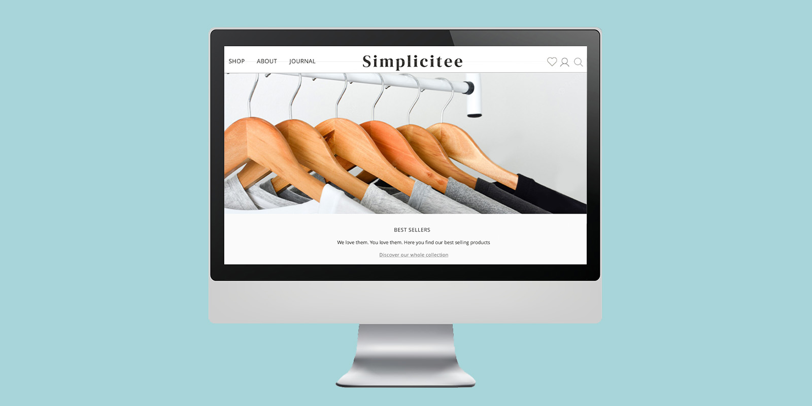
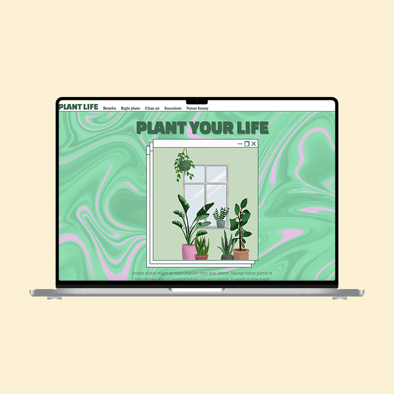
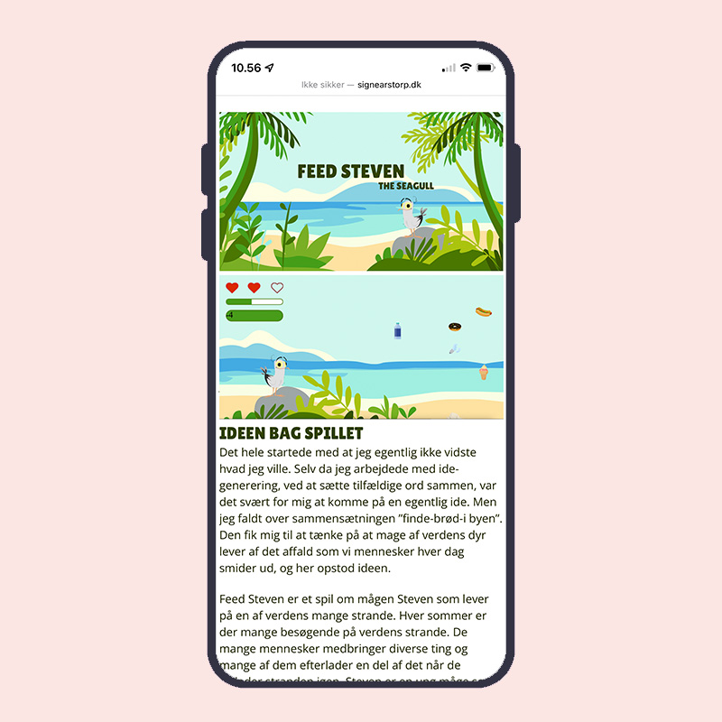
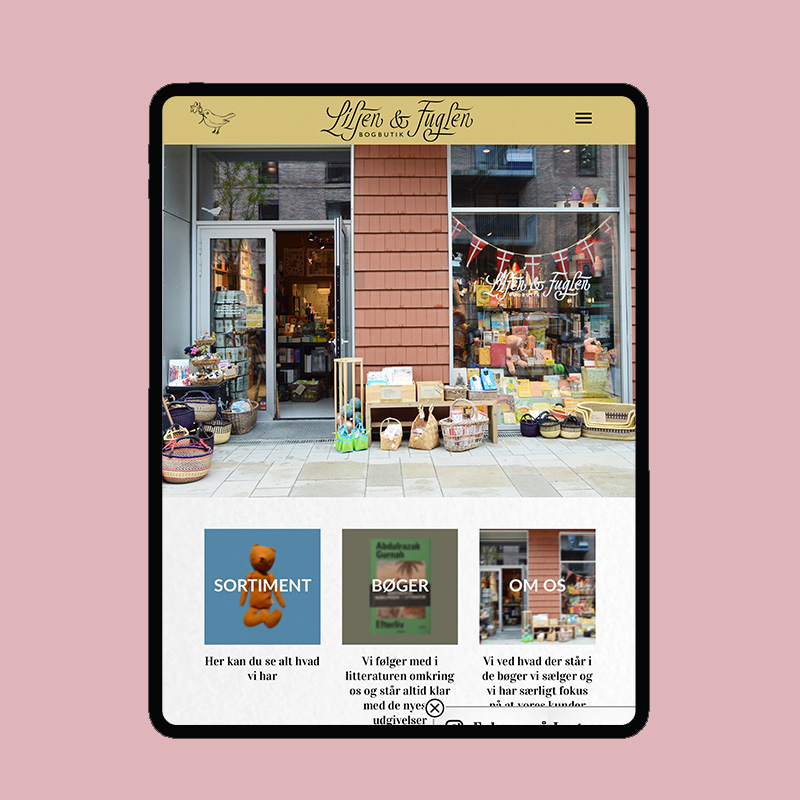

signe arstorp madsen
studerer multimediedesign
Velkommen til mit portfolio. Multimediedesignuddannelsen har det seneste halve budt på mange nye udfordringer, der har givet mig mange nye kompetencer. Her kan du mine projekter fra første semester på studiet
portfolio



